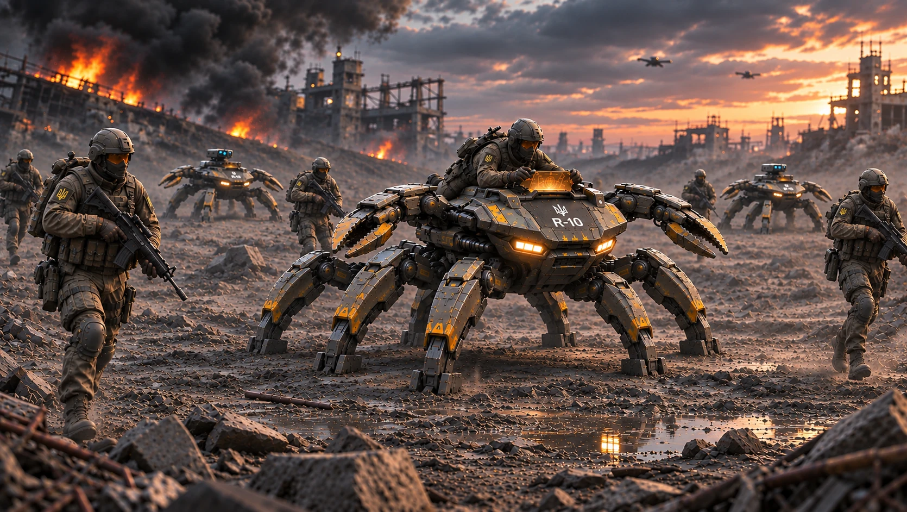
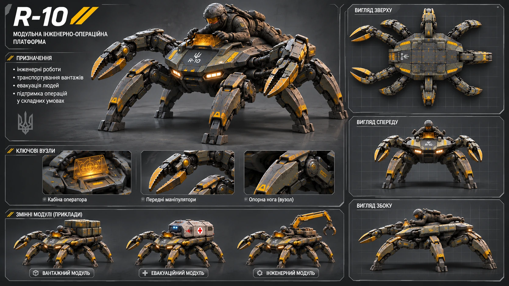
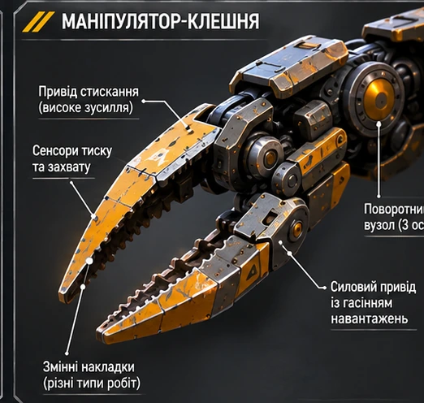
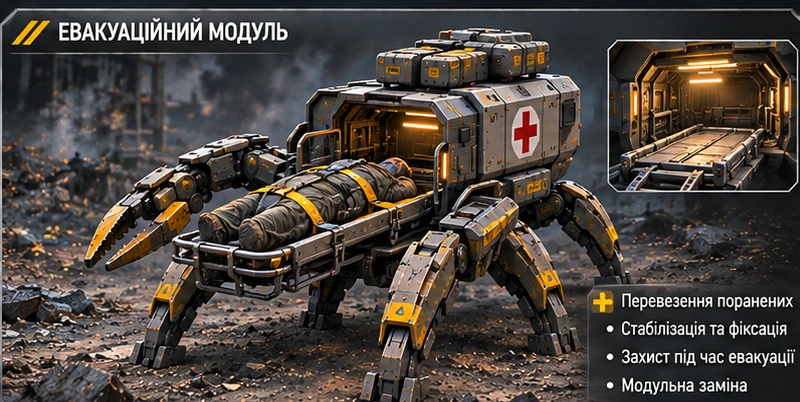
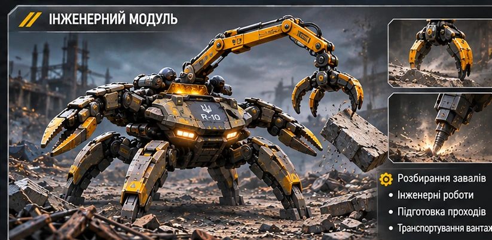
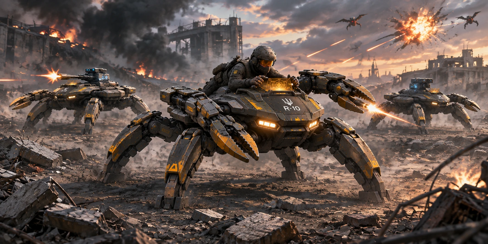
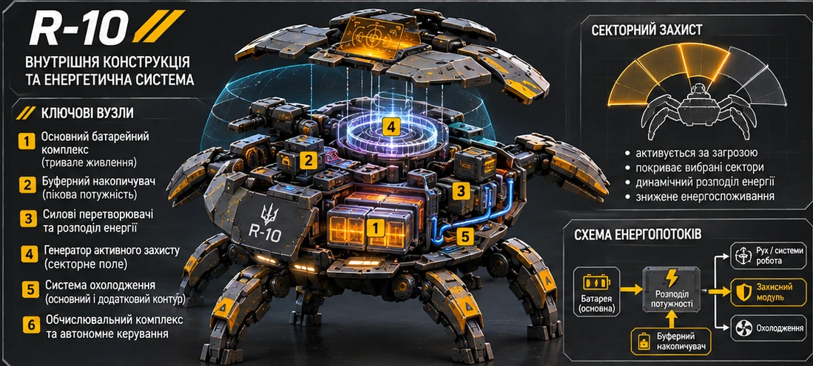

Вантажний модуль
Знімний модуль на спині робота: платформа або контейнер для спорядження й вантажів. У базової машини немає постійного великого вантажного відсіку.

Компактна модульна інженерно-операційна платформа. Низький крабоподібний робот із шістьма ходовими ногами, двома окремими боковими маніпуляторами-клешнями, місцем оператора та змінними модулями для вантажних, евакуаційних і допоміжних робіт.
R-10 — компактна шестинога платформа, призначена для підтримки піхоти та виконання допоміжних завдань у складних умовах. Її конструкція поєднує низький броньований корпус, стійку ходову систему й окремі маніпулятори, а модульна схема дає змогу пристосовувати машину до конкретної роботи.
На наданих ілюстраціях показано як R-10 з оператором, так і безпілотні машини, що діють поруч із піхотою. Це підтверджує можливість зображати платформу в обох варіантах, але конкретна архітектура автономного керування та взаємодії з оператором поки не деталізована.
Основу R-10 становить широкий, плаский і низький броньований корпус із крабоподібним компонуванням. Навколо нього розташовані рівно шість ходових ніг — три з кожного боку. Ноги є основними опорними та руховими елементами платформи.
Окремо від них встановлено два маніпулятори-клешні. Вони виходять із боків передньої половини корпуса, трохи попереду його центру, та розведені назовні. Маніпулятори не є ногами й не входять до числа шести ходових кінцівок.
У передній частині корпуса розташовані фари та два штатні голкомети. На інфографіці також показано окремий верхній вузол керування й місце оператора. Базовий корпус залишається компактним: великого постійного вантажного відсіку позаду не передбачено.

Створи технічну інфографіку R-10 на темно-сірому нейтральному фоні. Використовуй затверджене еталонне зображення як єдине джерело геометрії. Збережи широкий низький корпус, рівно шість ходових ніг (три з кожного боку) та рівно два окремі маніпулятори-клешні, що виходять із боків передньої половини корпуса. Маніпулятори не замінюють ноги. Покажи узгоджені вигляди згори, спереду й збоку, а також місце оператора та знімні вантажний, евакуаційний й інженерний модулі. Не додавай непідтверджених числових характеристик.
R-10 має два режими пересування: кроковий і колісний. Колеса не є окремими зовнішніми вузлами й не замінюють ходові ноги. Чотири колісні касети вбудовані в броньовані сегменти чотирьох зовнішніх ніг — передньої та задньої пари з обох боків корпуса.
У кроковому режимі колісні касети повністю прибрані всередину захисних кожухів. Зовні залишаються звичайні броньовані сегменти ніг і механічні стопи. Це зменшує ризик пошкодження коліс на завалах і під час бойового руху.
Для переходу на колісний режим чотири зовнішні ноги змінюють положення, а колісні касети висуваються вниз і фіксуються в робочому стані. Броньовані кожухи прикривають верхню та внутрішню частини коліс, залишаючи відкритою лише необхідну для контакту з поверхнею ділянку. Дві середні ноги складаються під корпус і фіксуються; за потреби вони можуть короткочасно опускатися для стабілізації на нерівностях.
У колісному режимі платформа рухається на чотирьох колесах, а дві середні ноги виконують допоміжну стабілізаційну функцію. На складному рельєфі R-10 повертається до крокового режиму, у якому всі шість ніг знову працюють як повноцінні ходові опори, а колеса ховаються в броньовані касети.

У базовому варіанті на верхній частині корпуса передбачене одне місце оператора. На головній ілюстрації оператор розташований низько над корпусом і працює з винесеним перед ним інформаційним дисплеєм. Посадка має залишатися компактною та не перетворювати платформу на машину з високою закритою кабіною.
Бойові сцени показують також R-10 без людини на корпусі. Це візуально підтверджує безоператорний варіант застосування, однак тип автономності, дистанційного керування, канали зв'язку та рівень самостійності поки не визначені. Ці параметри не фіксуються як остаточні технічні характеристики.
Базова платформа R-10 однакова для всіх варіантів. Спеціалізоване обладнання кріпиться на верхній частині корпуса, на спині робота, через універсальну систему монтажних точок. Це можуть бути будь-які сумісні модулі — вантажні, евакуаційні, інженерні, розвідувальні, зв’язкові або інші. Встановлення модуля не змінює базову ходову систему, маніпулятори чи корпус.
Знімний модуль на спині робота: платформа або контейнер для спорядження й вантажів. У базової машини немає постійного великого вантажного відсіку.
Знімний модуль на спині робота з ношами для транспортування пораненого. Конкретна місткість і спосіб фіксації потребують уточнення.
Знімне обладнання на спині робота для допоміжних інженерних робіт. На ілюстрації показано компактний механізований робочий вузол.
Дві бокові клешні — штатні вузли базової платформи, а не знімні ноги. Вони залишаються присутніми в усіх конфігураціях.



На бойових ілюстраціях R-10 рухаються поруч із піхотою та підтримують її просування. Центральна машина може мати оператора, тоді як інші платформи показані без людини на корпусі. У сценах збережено відносно компактний масштаб R-10 щодо дорослого бійця.

Кінематографічна сцена з трьома платформами R-10 у зруйнованому промисловому середовищі. Зберегти канонічну геометрію: широкий низький корпус, рівно шість ніг і два окремі бокові маніпулятори на кожній машині. Масштаб роботів узгодити з дорослими піхотинцями. Оператор присутній лише на центральній машині, дві інші діють без людини на корпусі. Не додавати зайвих ніг або маніпуляторів, не змінювати конструкцію.
Широка кінематографічна сцена: три R-10 супроводжують піхотний підрозділ у русі. Люди — дорослі бійці реалістичного зросту; їхній масштаб має бути послідовним у всіх планах з урахуванням перспективи. Один оператор може бути на центральній платформі, дві інші — без операторів. Кожен R-10 має рівно шість ходових ніг і два окремі маніпулятори. Не створювати карликових фігур, непропорційних людей або зайвих кінцівок.
У всіх ракурсах і конфігураціях R-10 зберігає широкий низький корпус, рівно шість ходових ніг, рівно два додаткові бокові маніпулятори-клешні, передній блок із фарами та двома голкометами, а також компактне місце оператора. Вантажні, евакуаційні та інженерні модулі є змінним оснащенням.
Попередня архітектура R-10 передбачає внутрішній основний батарейний комплекс, який живить ходову систему, два маніпулятори, сенсори, обчислювальний комплекс, зв'язок та штатні системи. Для активного захисту використовується комбіноване живлення: основна батарея забезпечує тривалу роботу, а окремий буферний накопичувач віддає короткочасну пікову потужність генератору поля.
Для перспективного захисного модуля вже визначено концепцію: секторне поле з автономним вибором напрямку та комбінованим живленням від основної батареї й окремого буферного накопичувача. Ці рішення належать до майбутньої модернізації, а не до оснащення першого прототипу.
Під час розробки майбутнього модуля передбачено інтегрований додатковий контур охолодження для його силової електроніки, накопичувача та генератора поля. До завершення розробки й випробувань ці вузли не вважаються частиною штатної комплектації R-10.

Таблиця нижче складена за затвердженим описом і наданими ілюстраціями. Вона фіксує те, що вже можна визначити візуально або з опису. Числові значення, яких джерела не дають, не підмінено припущеннями.
| Параметр | Попередня характеристика | Статус |
|---|---|---|
| Клас | Модульна інженерно-операційна платформа підтримки піхоти | За описом сторінки та інфографікою |
| Компонування | Низький широкий крабоподібний броньований корпус | Підтверджено зображеннями |
| Ходова система | 6 механічних ніг — три з кожного боку | Канонічна вимога |
| Колісний режим | 4 висувні колісні касети в зовнішніх ногах; 2 середні ноги складаються під корпус і стабілізують платформу | Запропонована конструкція R-10 |
| Модульна база | Єдина базова платформа; будь-яке сумісне обладнання кріпиться на спині робота | Канонічне рішення |
| Маніпулятори | 2 додаткові бокові клешні в передній половині корпуса | Канонічна вимога |
| Штатне озброєння | 2 голкомети біля передніх фар | За описом та ілюстраціями |
| Оператор | 1 місце на верхній частині корпуса | Показано на ілюстраціях |
| Безоператорний варіант | Платформа може бути показана без людини на корпусі | Показано в бойових сценах; система керування не визначена |
| Змінні модулі | Вантажний, евакуаційний і інженерний | Показано на інфографіці |
| Базове вантажне оснащення | Постійного великого заднього вантажного відсіку немає | За конструктивним описом |
| Маса та габарити | Не визначені | Потрібні вихідні дані |
| Швидкість і запас ходу | Не визначені | Потрібні вихідні дані |
| Основне живлення | Внутрішній батарейний комплекс | Попередня архітектура |
| Живлення активного захисту | Комбіноване: основна батарея та окремий буферний накопичувач | Узгоджена концепція |
| Активний захист | Автономне формування секторного поля | За уривком Дня 75 та рішенням автора |
| Охолодження | Інтегрована система з додатковим контуром захисного модуля | Попередня архітектура |
| Ємність батареї, потужність генератора та автономність | Не визначені | Потрібні розрахунки й канонічні рішення |
| Вантажопідйомність і місткість евакуаційного модуля | Не визначені | Потрібні вихідні дані |
Довжина, ширина, висота корпуса, робоча висота на ногах і повна маса базової машини.
Матеріал опор, тип приводів, швидкість у кроковому й колісному режимах, стійкість і можливості подолання перешкод.
Тип джерела живлення, ємність, тривалість роботи та спосіб заряджання або заміни блоків.
Розподіл між ручним, дистанційним та автономним режимами; роль оператора й канал зв'язку.
Точки кріплення, допустима маса модулів, сумісність модулів із маніпуляторами та час заміни.
Підтвердити тип голкометів, їхні характеристики та чи є вони незмінною частиною всіх конфігурацій.
Використовуй цей текст разом із затвердженим референсом. Для кожного нового кадру змінюй лише сцену, ракурс і дію; геометрію платформи не переосмислюй.
СТВОРИ РЕАЛІСТИЧНУ КІНЕМАТОГРАФІЧНУ ІЛЮСТРАЦІЮ R-10 ДЛЯ ВСЕСВІТУ «ХАРАКТЕРНИКИ». КАНОН КОНСТРУКЦІЇ: R-10 — компактна низька широка крабоподібна модульна платформа. Корпус плаский, широкий, броньований. РІВНО ШІСТЬ ходових ніг: три з кожного боку корпуса. РІВНО ДВА додаткові маніпулятори-клешні виходять із боків передньої половини корпуса. Маніпулятори є окремими від ніг вузлами: не рахувати їх як ноги й не замінювати ними жодну з шести ніг. У передній частині — фари та два окремі голкомети біля них. На верхній частині є одне місце оператора. У базовій конфігурації немає великого постійного заднього вантажного відсіку. Усі спеціалізовані модулі кріпляться на спині робота й не змінюють базову платформу. Колісний режим: чотири висувні колісні касети в зовнішніх ногах, дві середні ноги складаються під корпус; у кроковому режимі всі колеса повністю сховані. ЗОВНІШНІСТЬ: Матова темно-оливкова й графітово-сіра броня, стримані жовті технічні акценти, реалістичні механічні шарніри, приводи, панелі, стики та опорні ступні. Зберігати компактні пропорції, низький центр корпусу та крабоподібний силует. Не перетворювати машину на високого павука, жука або танк. ПРАВИЛА ЛЮДЕЙ І МАСШТАБУ: Усі піхотинці — дорослі люди реалістичного зросту. Їхні пропорції мають бути однаковими між собою та узгодженими з оператором на платформі. Враховувати перспективу: дальні фігури можуть виглядати меншими лише через відстань, а не через непропорційне тіло. Оператор присутній тільки за прямою вказівкою для конкретної сцени; безоператорні платформи не мають людей на корпусі. СТИЛЬ: Фотореалістична наукова фантастика, правдоподібні матеріали, кінематографічне освітлення, темно-сіра/оливкова палітра з жовтими акцентами. Горизонтальний формат 16:9. Не додавати випадкових написів, цифр чи непідтверджених технічних характеристик. ПАРАМЕТРИ КАДРУ: Тип: [геройний вигляд / технічна схема / кроковий режим / колісний режим / бойова сцена / піхотний супровід / вантажний модуль / евакуація / інженерна робота]. Ракурс: [три чверті / спереду / збоку / згори / крупний план]. Дія: [описати]. Середовище й освітлення: [описати]. ПЕРЕВІРКА: рівно 6 ніг, 2 маніпулятори та 4 приховані колісні касети на кожному R-10; люди дорослого зросту; незмінна геометрія; оператор лише там, де його прямо замовлено; жодних вигаданих числових даних.